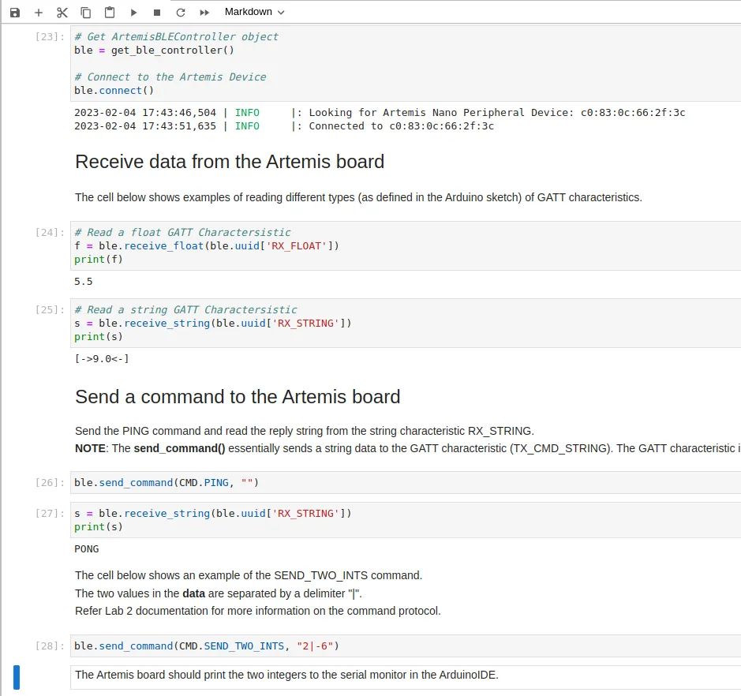
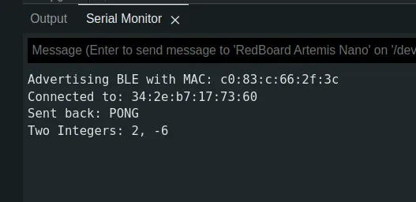
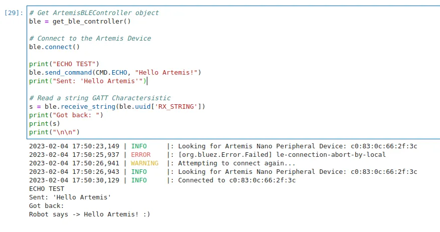
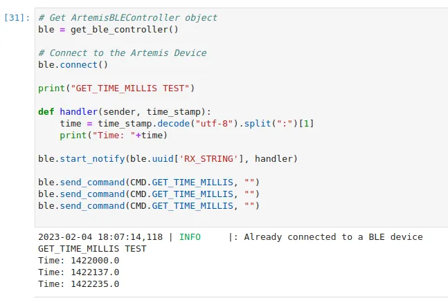
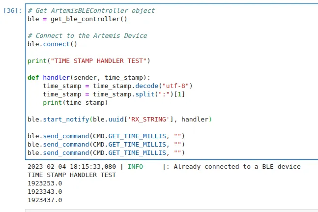
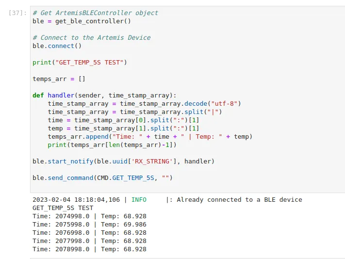
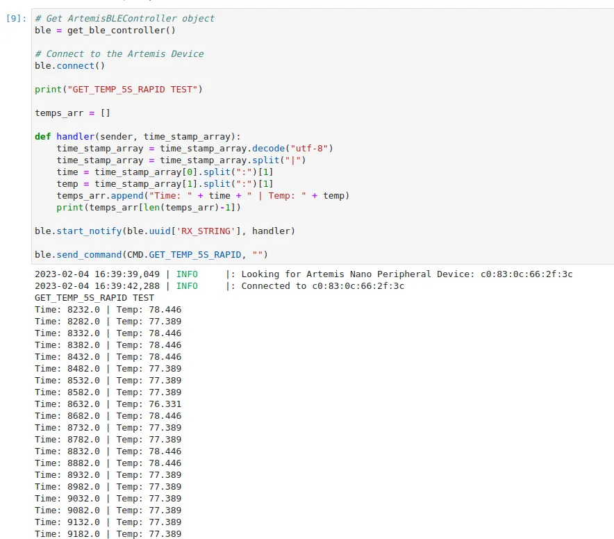

Lab 2 - Bluetooth Communication
2.2.23Introduction
In this lab I established communication between my laptop and Artemis board using BLE.
Prelab
Before I could write any code, I needed to install the necessary tools.
I first went through this process on Windows 11, which didn't work. Changes to the Windows Bluetooth drivers have been causing issues class-wide, and I decided to cut my losses and switch to Linux.
I followed this guide to install an Ubuntu partition on my laptop. I have previously had experience with Ubuntu through WSL, so the transition was fairly painless.
On my new Ubuntu installation I installed python and pip through the command line, and established a virtual environment. This allowed me to isolate this lab from any future python work that might break its dependencies. After installing the necessary dependencies, I could open Jupyter Notebook and begin working on demo.ipynb.
On the Arduino side, I burned the provided code onto the Artemis. This provided me with the following message:
Advertising BLE with MAC: c0:83:c:66:2f:3c
This MAC address is (meant to be) a unique identifier of my Artemis, allowing me to search for it among all other Bluetooth enabled devices.
My final before the lab was reading the codebase. On the Arduino side, the ArduinoBLE library is used to set up the Artemis as a BLE peripheral. The peripheral advertises one service (called testService) that offers three characteristics: rx_characteristic_string, tx_characteristic_float, tx_characteristic_string. These characteristics can be written too and read by the peripheral and any connected client, but we use them as their name suggests: transmission on tx and receiving on rx.
The Python side uses the Bleak package to establish a BLE central device. These act as the clients of the BLE world, and is aware of the characteristics of the Artemis.
Lab Tasks
Configurations
Each service and characteristic the Artemis advertises also needs a unique identifier for the laptop to query. To ensure I was the only one talking to my device, I generated a new UUID for each. The following code is from ble_arduino.ino:
#define BLE_UUID_TEST_SERVICE "f74736e0-f5ac-4541-959d-e6c1f1b3f55c"
#define BLE_UUID_RX_STRING "58482b00-4146-4122-be67-2d89016731a8"
#define BLE_UUID_TX_FLOAT "51eed2ce-3329-4232-b8d5-8f022aaa2d1a"
#define BLE_UUID_TX_STRING "aa71399e-0f1d-411d-ac23-7ace2936fd5e"
These UUID's match the ones stored in the python side's connection.yaml:
artemis_address: 'c0:83:0c:66:2f:3c'
ble_service: 'f74736e0-f5ac-4541-959d-e6c1f1b3f55c'
characteristics:
TX_CMD_STRING: '58482b00-4146-4122-be67-2d89016731a8'
RX_FLOAT: '51eed2ce-3329-4232-b8d5-8f022aaa2d1a'
RX_STRING: 'aa71399e-0f1d-411d-ac23-7ace2936fd5e'
Because I am running Linux, I also had to alter line 53 in base_ble.py, as outlined in the lab instructions.
Running demo.ipynb
We were provided with a demo file to test our BLE connection. After switching to Ubuntu, I was able to run the full file with little difficulty, resulting in the following output:


Sending an Echo Command
An Echo command returns the message that was sent to it. In this case, I augmented the message to show that the robot was responding. This required defining a new command, which must be coordinated between the Arduino and Python code.
The Arduino code is as follows:
case ECHO:
char char_arr[MAX_MSG_SIZE];
// Extract the next value from the command string as a character array
success = robot_cmd.get_next_value(char_arr);
if (!success)
return;
tx_estring_value.clear();
tx_estring_value.append("Robot says -> ");
tx_estring_value.append(char_arr);
tx_estring_value.append(" :)");
tx_characteristic_string.writeValue(tx_estring_value.c_str());
break;
The final output was:

Creating a Get Time Command
The get time command was similar to the echo command, but also including a float.
The Arduino code:
case GET_TIME_MILLIS:
tx_estring_value.clear();
tx_estring_value.append("T:");
tx_estring_value.append((float)millis());
tx_characteristic_string.writeValue(tx_estring_value.c_str());
break;
The Python code and output:

Making a Notification Handler
We often don't know when a message will be posted, but want to be alerted when it does. Bleak call these events notifications, and provides a method to register a handler function. Below is the Python code for implementing one, which extracts the timestamp from a message.

Writing the Get Temperature Command
The Artemis includes a temperature sensor and methods to access its data, so getting the temperature was similar to getting the time. In order to time the successive reads I used a delay. Below is the relevant code:
case GET_TEMP_5S:
for(int i = 0; i < 5; i++){
unsigned long start = millis();
tx_estring_value.clear();
tx_estring_value.append("T:");
tx_estring_value.append((float)start);
tx_estring_value.append("|C:");
tx_estring_value.append((float)getTempDegF());
if(i!=4){
tx_estring_value.append("|");
}
tx_characteristic_string.writeValue(tx_estring_value.c_str());
delay(start + 1000 - millis());
}
break;
And Python output

I also wrote a command that attempts to sample and relay data at 20Hz, which is shown below:
Arduino code:
case GET_TEMP_5S_RAPID:
for(int i = 0; i < 20*5; i++){
unsigned long start = millis();
tx_estring_value.clear();
tx_estring_value.append("T:");
tx_estring_value.append((float)start);
tx_estring_value.append("|C:");
tx_estring_value.append((float)getTempDegF());
if(i!=4){
tx_estring_value.append("|");
}
tx_characteristic_string.writeValue(tx_estring_value.c_str());
delay(start + 50 - millis()); // Around 20 times per sec
}
break;
Python code / output:

The output is clipped, but continues for 100 readings over 5 seconds.
Limitations
Dealing with the BLE overhead as well as constructing string messages takes a huge number of processor cycles. In some high speed applications this is unacceptable, and real time data relaying is not possible. In these cases, we need to store data and relay it at some other time.
With 384 kb of RAM, the Artemis can store 192,000 16 bit words. Assuming we are sampling 10 data points at 150Hz, this gives 1500 words per second. The Artemis would run out of storage in 128 seconds.
Although this is inversely proportional to the amount of data points we store, this should be enough to execute tricks and relay data afterwards.
Conclusion
Although my first attempts at using Windows 11 were rocky, the rest of the lab went smoothly in Linux. I am confident that I will be able to use Bluetooth to interface with and debug my robot over the following labs.